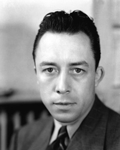

Альбер Камю
Роки життя:1913−1960
Читати:
«Чума» (скорочено)
Народився в сім'ї сільськогосподарського працівника Люсьєна Камю. Мати — Катрін Сантес, іспанка з походження. Коли Камю не виповнилося ще й року, від важкого поранення, отриманого в бою на Марні, помер батько. Мати Камю з двома дітьми переїхала в Алжир, де влаштувалася прибиральницею.
У 1918 p. Камю віддали у початкову школу Белькура. Закінчивши її з відзнакою, він продовжив освіту в Алжирському ліцеї на стипендію, яку виклопотав для нього його шкільний учитель Луї Жермен. У ліцеї (1923—1932) Камю перечитав праці Ф. Ніцше, книги А. Жіда, М. Барреса, А. Мальро, М. Пруста, Ф. Достоєвського.
У 1930 p. Камю захворів на туберкульоз, майже рік лежав у шпиталі, після чого повернувся у ліцей. 1931 р. у класі філософії Камю познайомився з молодим викладачем філософії та літератури Жаном Греньє, котрий справив величезний вплив на духовне становлення Камю і став згодом його наставником і другом. Завдяки Ж. Греньє Камю дізнався про ідеї релігійного екзистенціалізму, зацікавився філософією.
Восени 1932 p. Камю вступив на філологічний факультет Алжирського університету, де наполегливо навчався, суміщаючи заняття в університеті з працею. Із захопленням вивчав праці С. К'єркегора, А. Шопенгауера, О. Шпенглера, Л. Шестова. У журналі «Південь» Камю опублікував невеликі замітки, написані за порадою Греньє: «Жан Ріктюс. Поет злиденності», «Про музику», «Філософія століття», есе «Марення», «Сумніви», «Спокуса брехні», «Побажання», «Повернення до самого себе». Перші замітки та есе Камю за всієї їхньої незрілості містять деякі важливі мотиви: анархічний бунт проти суспільних умовностей, втечу у світ мрій, приниження раціонального первня в мистецтві. Загалом твори Камю пронизані кризовим станом духу, характерним для значної частини європейської інтелігенції після Першої світової війни.
Восени 1935 p. Камю вступив у алжирську секцію комуністичної партії Франції. Він розглядав комунізм як «перший крок, як аскезу, що готує ґрунт для більш духовної діяльності». За дорученням партії вів пропагандистську роботу серед мусульман.
У 1936 p. Камю очолив Театр праці, де виступив як режисер, актор і автор. У театрі були поставлені п'єси за творами А. Жіда, А. Мальро, О. Пушкіна, Ф. Достоєвського.
1937 p. Камю вийшов з комуністичної партії.
Того ж року він видав збірку есе «Виворіт і лице» («L'envers et l'endroit»), головною проблемою якої стало питання про здобуття особистістю гідності в абсурдному світі. Камю каже «так» життю, незважаючи на абсурдність буття, бо необхідно «бути самому вічною радістю становлення...» Створюючи в збірці ліричних есе «середземноморський міф», Камю прагне втекти від хаосу історії у мудрість природи. 1938 p. Камю розпочав журналістську діяльність у газеті «Альже репюблікен» і паралельно продовжував літературну працю, написав філософську драму «Калігула» («Caligula», 1944), повість «Сторонній» («L'etranger», 1942), есе «Достоєвський і самогубство», яке увійшло згодом у «Міф про Сізіфа» («Le mythe de Sisyphe») під назвою «Кирилов», завершував роботу над романом «Щаслива смерть» («La mort heureuse», 1971). Під час окупації фашистами Франції К. вів підпільну роботу в організації «Комба».
«Сторонній» мав величезний успіх, надовго ставши одним із найчитабельніших творів французької літератури XX ст. Повість отримала високу оцінку критики. Прикметним із цього погляду є дещо перебільшений захоплений відгук про твір відомого французького критика Г. Пікона: «Якби через декілька століть залишилася лише ця коротка повість як свідчення про сучасну людину, то її було б достатньо, як достатньо прочитати «Рене» Шатобріана, аби познайомитися з людиною епохи романтизму».
Герой повісті Мерсо — узагальнений образ, який представляє екзистенціалістський варіант «природної людини». Розірвавши внутрішні зв'язки із суспільством, дрібний службовець Мерсо живе з усвідомленням абсурдності буття. Це гостре відчуття абсурду робить його «стороннім», якому чужі вартості та норми суспільства. Мерсо живе, скоряючись інстинктам, гостро відчуваючи красу природного світу; у Мерсо криється небуденний ліричний дар.
Майже неусвідомлено він вбиває людину. У другій частині повісті історія головного героя у процесі судового розслідування постає ніби в кривому дзеркалі. Мерсо засуджують, по суті, не за скоєне вбивство, а за спробу знехтувати умовними формами загальноприйнятих стосунків між людьми, за порушення правил гри, зате, що він «сторонній». Камю ставить свого героя в типову для екзистенціалістів «межову ситуацію», тобто в ситуацію вибору перед лицем смерті й абсурду, коли, згідно з екзистенціалістською філософією, настає прозріння. Мерсо вибирає свободу знати, що світ абсурдний. Відмовившись піти на компроміс, Мерсо приймає смерть.
Ж. Ґреньє в одному зі своїх листів до автора «Стороннього» зазначав вплив Ф. Кафки на стилістику повісті (лист від 19 квітня 1941 p.). Камю відповів учителеві, що «вчився у Кафки духу, але не стилю». Поміж тим, за очевидної різниці у стилістиці Кафки та К. обидва вони тяжіли до притчевих форм жанрового мислення, для обох характерна лаконічність мовної форми при філософській глибині змісту. Зазначаючи зовнішньо безпристрасний тон оповіді в «Сторонньому», Р. Варт говорив про «нульовий градус письма» в повісті. Дійсно, Камю переконаний, що життя просте, що люди все ускладнюють, а тому й говорити про нього треба просто, без метафор, натяків, складних культурних ремінісценцій, за якими криється прагнення втекти від усвідомлення трагізму людської долі.
Етапним для Камю твором стала книга «Міф про Сізіфа»(1942), яка завершує перший період у творчості письменника. «Міф про Сізіфа» має підзаголовок: «Есе про абсурд». Проблеми абсурду та «верховного самогубства» як вираження людського бунту проти нього, стають центральними в цьому циклі. У «Міфі про Сізіфа» Камю дає означення абсурду: «Сам по собі світ просто не наділений розумом: це все, що можна про нього сказати. Але зіткнення цієї ірраціональності з відчайдушним бажанням ясності, поклик якої лунає в глибинах людської істоти, — ось що абсурдне. Абсурд залежить тією ж мірою від людини, якою і від світу».
Абсурд призводить до бунту проти Бога і людської долі. Предтечею екзистенціалістів у розробці цієї проблематики К. вважає Ф. Достоєвського. Кирилова, одного із персонажів «Бісів», Камю трактує як «людину абсурду», для якого самогубство стало єдиним засобом звільнитися від муки абсурду. Кирилов — логічний самогубця: якщо життя не має сенсу, то немає сенсу і проживати його. Проте істотно, що для Камю визнання абсурду — не кінцевий висновок, а лише початкова точка в пошуку справжніх вартостей.
Проблемі метафізичного бунту присвячена п'єса Камю «Каліґула». Безпосереднім історичним джерелом сюжету є твір римського історика та письменника І ст. н. є. Светонія «Про життя дванадцяти цезарів». За свідченням Крістіан Ґалендо,»...1937 р. Камю читав «Калігулу» Светонія. Він був зачудований цією особистістю. Він постійно говорив про нього й головним чином його «грав».
У процесі художнього опрацювання історичного матеріалу Камю відмовився від конкретно-історичного аналізу та розглядає головного героя як носія метафізичного бунту, а його трагедію — як трагедію «верховного самогубства». У 1958 р. у передмові до американського видання збірки п'єс Камю писав: «Каліґула» — це історія «верховного самогубства». Історія, яка найвищою мірою трагічна та людяна. З вірності самому собі, невірний стосовно ближніх, Каліґула згоджується померти, збагнувши, що ніхто не може врятуватися поодинці й що не можна бути вільним супроти інших людей».
Втративши кохану жінку, молодий імператор усвідомлює просту істину: «Люди помирають, і вони нещасні». Каліґулу дратує заспокійлива брехня, яка його оточує. Він прагне до абсолюту, хоче «жити за правдою». Але абсолют недосяжний, як недосяжний місяць, якого хоче запопасти Каліґула. Імператор прагне змінити існуючий порядок буття. Його влада та свобода безмежні. Осягнення абсурдності життя робить з доброго та споглядального К. жорстокого тирана, котрий вбиває своїх підданих. У фіналі п'єси Каліґула зазнає поразки. Він усвідомлює свою неправоту й тому сам прирікає себе на смерть. Знаючи про заплановану змову, він нічого не робить, щоби запобігти їй. «Якщо правда Каліґули в його бунті, то його помилка — в запереченні людей. Не можна все зруйнувати, не зруйнувавши самого себе», — писав згодом Камю.
П'єса була поставлена у паризькому театрі Еберто. Прем'єра відбулася 25 вересня 1945 р. Роль Калігули виконував Жерар Філіп. Образ Каліґули викликав у глядачів закономірні асоціації з А. Гітлером, хоча, як справедливо зазначають дослідники творчості Камю, «під час написання тексту Камю був далекий від задуму створити п'єсу з історичним ключем».
Роман «Чума» («La peste», 1947) — найбільший серед прозових творів Камю. Після виходу у світ роман був відзначений премією критики. Французький критик Г. Пікон писав: «У цьому стрункому творі, такому погідному на позір, звучить багато різних голосів. У ньому уживаються одночасно абсурд і бунт, байдужість і пристрасть, холодність і захопленість, відстороненість і чуттєвість, відчуття вічного і миттєвого...»
Одним із головних джерел роману є есе А. Арто «Театр і чума», у якому автор виступає апологетом сюрреалізму і вбачає завдання театру в тому, аби, руйнуючи позірну респектабельність суспільних законів, звільнити інстинкти, які зазвичай притлумлюються правилами людського співіснування.
Трактування «чуми» в романі Камю набуває більш актуального і конкретно-історичного звучання. Як зазначав письменник, «очевидний зміст «Чуми» — боротьба європейського Опору проти фашизму». У романі присутній і прихований абстрактно-символічний пласт, який дозволяє тлумачити «Чуму» як роман-притчу про людське існування загалом. У «Чумі» Камю розвиває екзистенціалістські мотиви своїх попередніх творів: абсурдність буття, свободу людини, її вибір перед лицем смерті — і доходить висновку, що «є більше підстав захоплюватися людьми, аніж зневажати їх». Преса відгукнулася на вихід роману численними статтями та рецензіями (статті Р. Кана, Г. Пікона, К. Руа).
«Чума» — хроніка чумного року в невеликому загумінковому містечку Орані на узбережжі Середземного моря. «Чума» позбавлена поетичної, ліричної інтонації, яка іноді проривається в «Сторонньому»(напр., у пейзажах). Оповідна манера в «Чумі» зорієнтована на достовірність документального свідчення, на скрупульозність, точність протокольного запису. У центрі роману — не доля індивідуума, а «колективна історія», трагедія суспільства. Конфлікт набуває метафізичного характеру: це не зіткнення окремих особистостей, воль, характерів чи суспільних груп, а зустріч людства з безособовою та грізною чумою, певним абсолютним злом. У «Чумі» К. жанром і художньою структурою роману задає певну багаторівневість його прочитання. «Чума» — це і розповідь про фашистське нашестя, подана в алегоричній формі, але водночас це й міф про споконвічну долю людини.